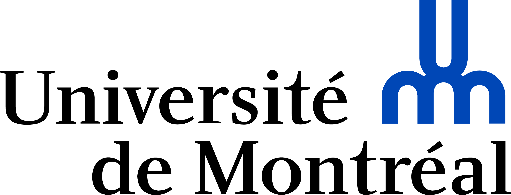
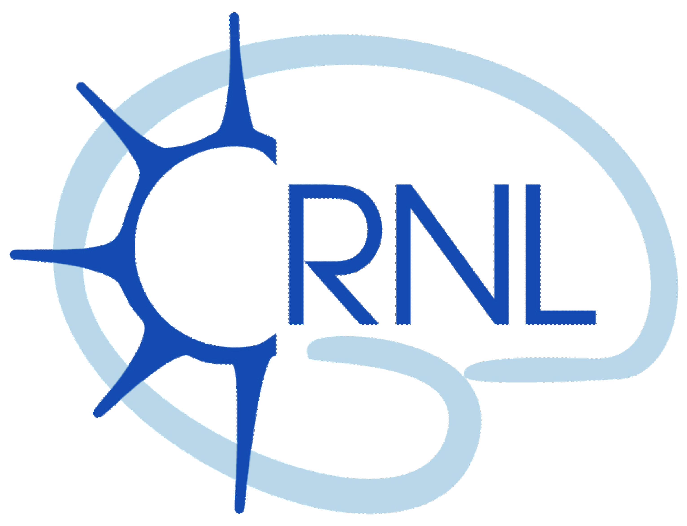
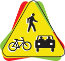
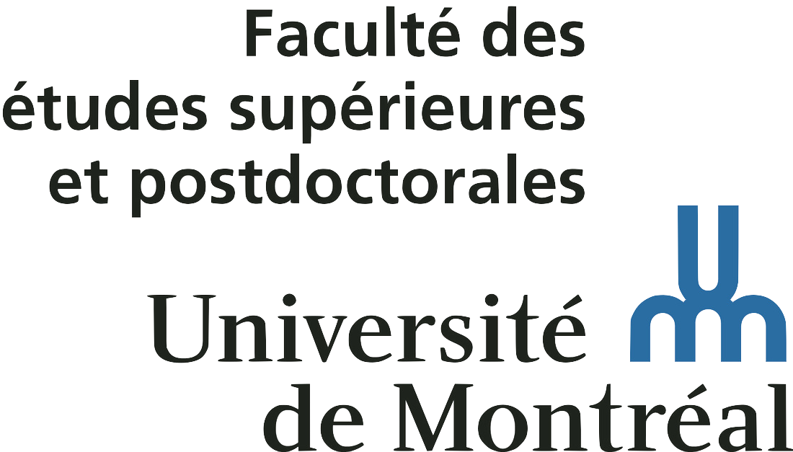
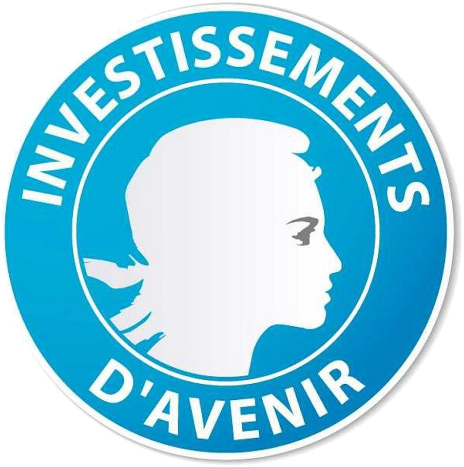

I am a neuroscientist interested in the sensorimotor control of reaching and visual attention. I am currently working
at York University (Toronto) as a postdoctoral researcher in Denise Henriques' lab.
I did a joint PhD in Cognitive Neuroscience and Vision Sciences.
My research project consisted in understanding how the brain combines and transforms sensory information such as vision and proprioception to produce and control reach movements.
I conducted studies involving healthy participants as well as patients suffering from optic ataxia, a sensorimotor deficit following parietal brain damage.
I have a strong research interest in multisensory integration, sensorimotor transformation, online motor control as well as patient-oriented research.
I am also involved in research about attention reallocation and the interaction between spatial attention and eye movements.
Academics
You can find my full curriculum vitae here (last updated January 2021)
Education
PhD in Cognitive Neuroscience
Nov 2014 - Jun 2018
Université Claude Bernard Lyon 1, France

PhD in Vision Sciences
Nov 2014 - Jun 2018
Université de Montréal, Canada
MSc in Neuroscience
Sep 2012 - Jul 2014
Université Claude Bernard Lyon 1, France
BSc in Physiology
Sep 2009 - Jun 2012
Université Claude Bernard Lyon 1, France
Work Experience
Postdoctoral visitor
May 2020 - present
York University, Canada
Postdoctoral fellow
Apr 2019 - Apr 2020
École d'Optométrie, Université de Montréal, Canada

Postdoctoral fellow
Oct 2018 - Mar 2019
Centre de Recherche en Neurosciences de Lyon, France
Teaching assistant
Sep 2015 - Dec 2015
Université de Montréal, Canada
Fellowships & Awards
Vision: Science to Applications (VISTA) Postdoctoral Fellowship
May 2020 - May 2022
York University, Canada

Postdoctoral Student Award
Jan 2020
Road Safety Research Network (RRSR) of Québec, Canada

Excellence scholarship
Dec 2017
Faculté des Études Secondaires et Postdoctorales - École d'Optométrie de l'Université de Montréal, Canada
Scholarship for end of PhD studies
Sep 2017 - Mar 2018
Faculté des Études Secondaires et Postdoctorales, Canada
Additional funding for students
Jul 2017
Groupe de Recherche en Sciences de la Vision, Canada
Doctoral mobility fellowship
Sep 2015 - Dec 2015
LabEx CORTEX, France

Doctoral mobility fellowship
Jan 2015 - Jun 2015
Programme Avenir Lyon St-Etienne, France
Expertise
Methods
Motion capture (Optotrak and Optitrack systems), eye-tracking (EyeLink system), electro-oculography, psychophysics, behavioral studies, single-case research
Analysis
Hand, head and eye movement kinematics, EOG signal reading, bootstrapping, single-case statistics


{kind=link}